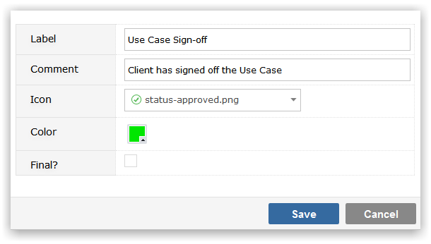

You must create at least one Status code for your Project Template and you cannot define any Workflow until you have defined your Status codes.
Make sure that you have selected the Project Template that you wish to maintain Status values for from the drop-down list.
To Add a new Status value, click on the Add button. You will be prompted to provide:

Click Save to create the Status value. When configuring Workflow you will be asked to specify the transition between the various Statuses that you create and also which Security Groups (users) are allowed to make that transition.
To maintain the Label, Comment, Icon, Color or Final? values of the Status, click in the appropriate field and use Inline editing to easily and instantly change the field value.
To delete a Status click on the delete icon to the right of the screen. You will be required to specify an alternative value that any items in the deleted Status will be recoded to. This is to ensure that there are no orphaned records in your data, with Statuses that do not exist in the Template.
To the left of the Status icon is a drag handle. Position the mouse over this region and you can drag-drop the Status Codes to reorder them. Status codes will appear in the Visual Planner in the order in which they appear on the Template.
TipIn the Visual Planner if you view Status (or any other code) on one of the axes all status values for the Template must be retrieved. Therefore keep your Status values to a set that really matches your business and avoid having statuses like 'Logged' for one Process and 'Opened' for another Process in the same Template when either status could suffice for both.